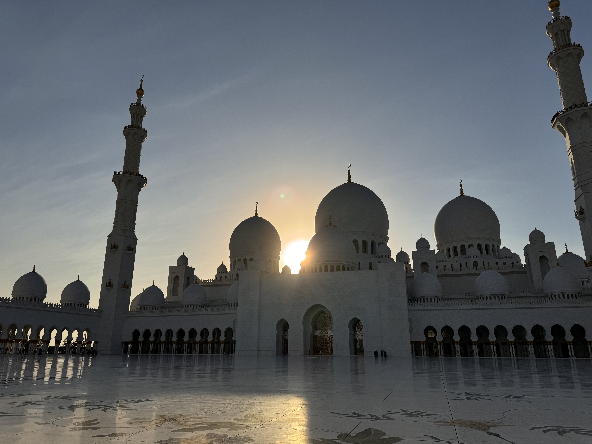

Academic Expansion in the UAE
Semester abroad at NYU Abu Dhabi. Computational Physics opened the door to simulation-driven research and changed my technical direction. Witnessing the UAE's 50-year transformation from desert to global metropolis was a live study in SDG 11.
UAE
Computational Physics
SDG 9 · 11